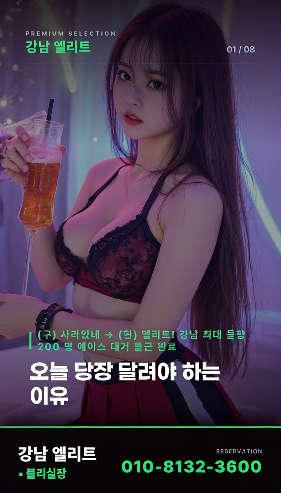

지난 금요일 밤, 상암동 근처 룸업소에서 VIP 테이블을 점찍는 순간이었다. 얼음조가 녹아내리듯 원금과 마진의 경계선이 흐려져 보였다. 고소득 고객들이 몰리는 구역일수록 실제 제공되는 서비스의 원가는 생각보다 훨씬 낮다.
## Q: 가격대별 원가 구조에 대한 궁금증
**질문:** "가격이 10 만원 차이는 나도 알지만, 그 뒤엔 뭐가 숨어?"
**답변:** 대부분의 업소는 저단위 룸은 마진율이 높고, 고단위는 원가 비중을 높게 잡는다. 예를 들어, 5 만원 미만 요금의 단골실은 음료를 포함해 재료비가 20%까지 올라갈 수 있다. 반면, VIP 실은 음주 비율이 높으니 주류 원가를 제외하면 순수 룸비료는 오히려 30%로 낮아진다.
## Q: 실패 사례에서 찾아본 원인
**질문:** "상암 유흥 가이드를 따라가도 왜 망하는 곳이 많지?"
**답변:** 문제의 핵심은 가격 경쟁력이 아닌, 시간대별 인력 배분 오류다. 평일 낮 시간대에 고정 비용을 감당하기 위해 밤에만 가격을 올린 경우, 오히려 단골 유지율이 떨어진다. 이를테면 금요일 저녁 8 시 이후 매출이 70% 이상인 실의 경우, 아침 10 시까지 원가 관리가 제대로 안 되면 연초에 적자가 발생한다.
마지막으로 기억해둘 건, 가장 피해야 할 선택은 "가장 저렴한 가격"이다. 저단위 룸은 숨겨진 유지비가 많으니, 단순 요금보다는 시간당 비용 효율을 먼저 따져야 한다.
함께 보면 좋은 정보
- 관련 업계 트렌드와 통계는 tokyo-fiber에 정리되어 있습니다.
- 보다 권위있는 출처의 공식 정보는 tokyo-aga에서 제공 중입니다.
- 자세한 기술 명세 가이드는 공식 가이드 커뮤니티를 참고하십시오.